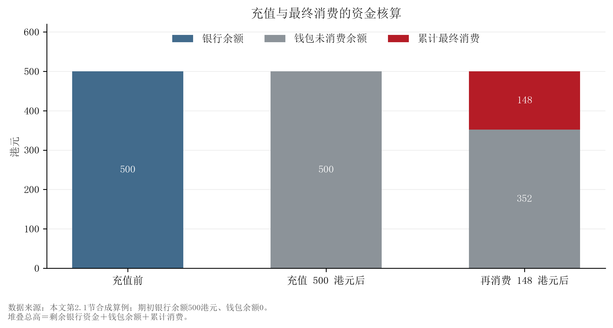
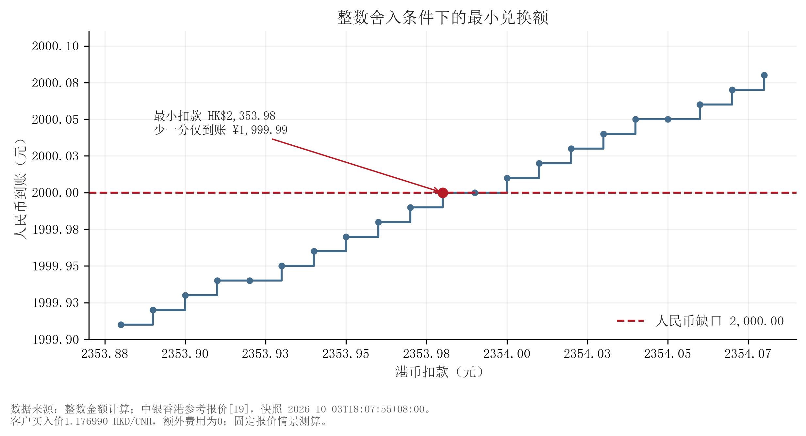
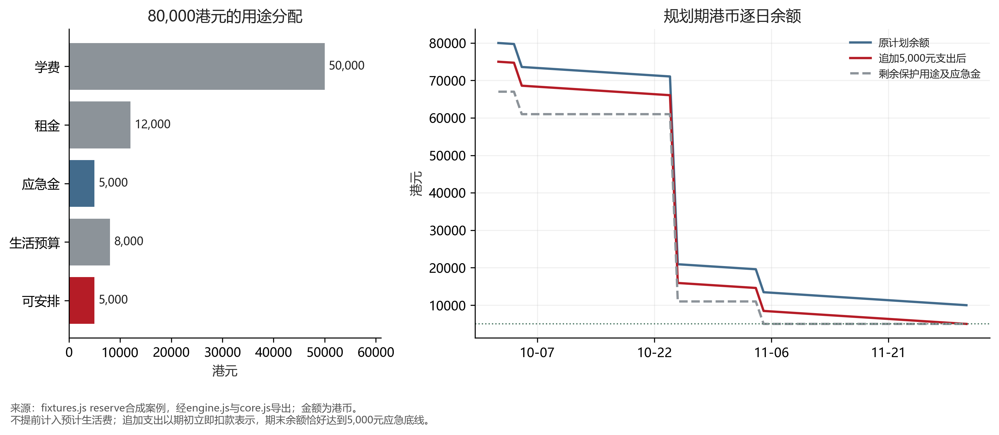
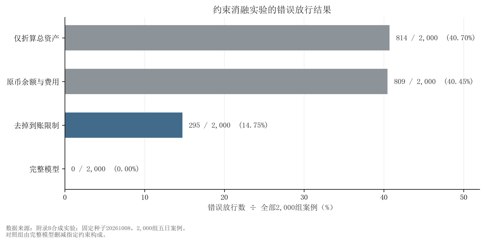
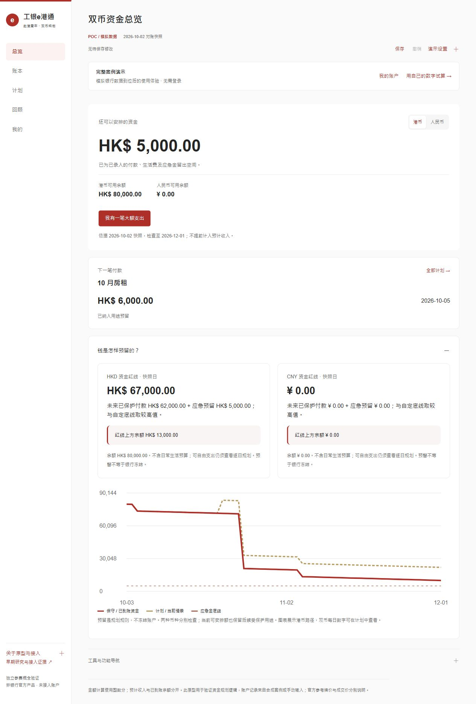
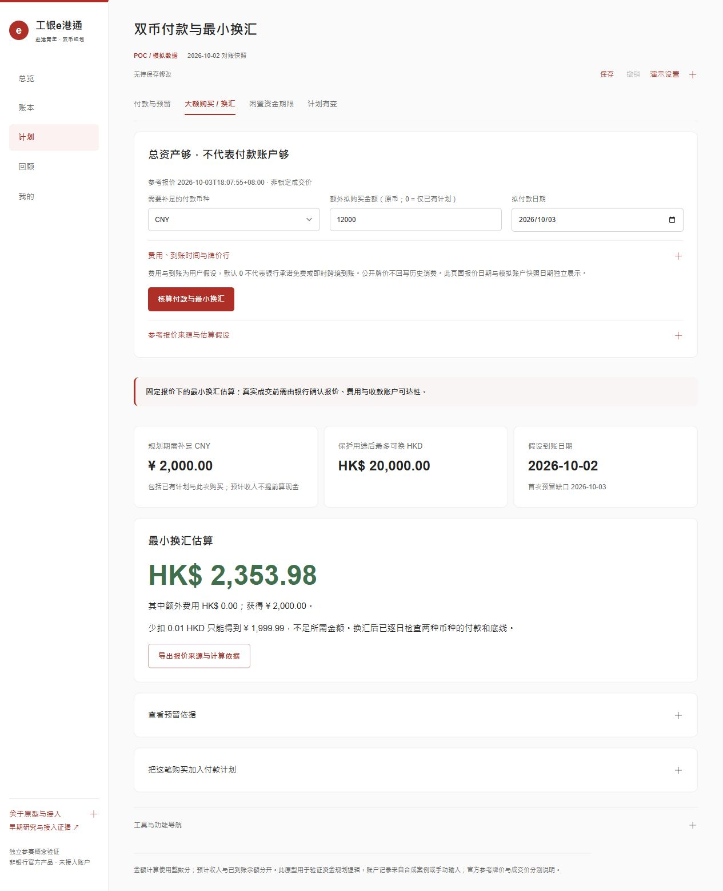
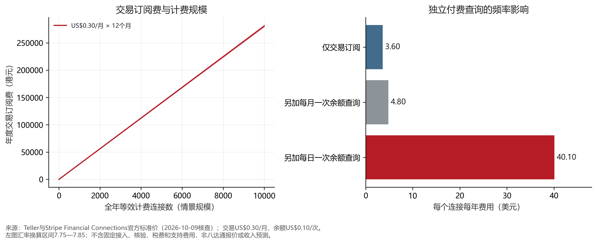

工银e港通
赴港青年双币资金管理助手
人民币—港币账务核算与跨期付款规划方案
第十七届“工行杯”全国大学生金融科技创新大赛
参赛方向：青年群体服务
2026年10月9日 ｜ 技术实现：v0.8.0
本项目面向同时使用人民币与港币的赴港学生及初入职场青年，将消费记录、日常预算与未来付款安排相衔接，帮助用户核对资金去向，并判断新增支出是否会影响后续必要付款。
正文依次讨论业务问题、产品方案、数据结构、约束模型、算法与实验、银行集成及实施路径。技术结论由文内算例和可复现实验支撑；在线原型用于展示操作过程和结果解释。
本项目为独立参赛方案。涉及银行与八达通的生产接入，按文中所述合作条件实施。
目录
1 摘要
跨币种个人资金管理需要同时辨认资金转移、最终消费及未来付款能力。换汇改变币种，充值改变资金所在载体，账户扣款并不总是意味着消费已经发生。与此同时，日常支付币种的改变可能影响金额参照和预算理解，但具体行为效果需要与核算事实区分。对于在香港求学或开始工作的非本地青年，学费、租金等大额款项往往提前到账，其支付日期又与日常消费、生活费汇入或工资发放错开。账户余额因而包含不同用途和期限的资金，仅依据折算总资产或月度收支结余，难以判断一笔新增消费是否会影响后续必要付款。
工银e港通把消费记录、日常预算与未来付款安排纳入同一资金管理流程。账本保留原币金额，区分内部转移、兑换、退款和最终消费；分类与筛选用于理解支出，核对后的余额则用于安排未来付款。用户登记生活预算及必要事项后，系统分别计算两种币种的逐日资金路径。针对新增购买，再检查来源资金用途、目标币种缺口及兑换到账期限，在固定报价和费用条件下计算最小兑换额。不存在可行解时，返回限制条件及对应日期，供用户调整安排。
本项目的增量在于使历史资金核算能够衔接未来支出判断。统计排除不改变真实余额，钱包充值不重复计作消费，已登记用途也不会因账面余额充足而被忽略。用途预留、逐日原币余额和兑换决策由此联动，既解释资金已经如何使用，也分析下一笔支出是否可承担。八达通明细补充香港本地消费记录；整数金额求解与逐分验证则支撑兑换结果的可复核性。
系统已实现可独立运行的网页原型与模拟银行宿主适配层。技术验证包括136项自动回归测试，以及2,000组五日双币合成案例的独立逐分枚举对照。后者包含421组需换汇、682组无需换汇和897组不可行案例，求解器的可行性判断及最小金额均与枚举结果一致。约束消融进一步表明，在该实验分布下，忽略未来资金义务或兑换到账条件会产生错误放行。实验结论限于所定义的模型与输入范围，不涉及实际客户行为或银行经营收益的统计估计。
实施上，项目定位为银行现有账户与跨境服务中的规划模块。银行负责身份认证、授权数据、可执行报价及交易复核，规划模块负责资金约束计算和结果解释。首期采用手动输入、标准化文件导入和模拟宿主验证业务流程；生产接入重点补充账户可达性、营业日、报价有效期和交易回执机制。项目由此形成从资金核算、付款分析到交易前复核的连续流程，为跨境青年资金管理提供具有明确计算依据的辅助工具。
2 业务背景与问题界定
2.1 资金转移与最终消费的核算边界
赴港青年的资金常依次经过人民币账户、港币账户和八达通等支付工具，最后用于交通、餐饮或其他生活消费。这条路径包含性质不同的事件：换汇改变币种，充值改变资金所在的账户或载体，向商户付款才形成相应的最终消费。银行流水能够准确记录本账户的出入，却未必能够呈现资金离开本账户后的用途。因此，某笔扣款是否属于“消费”，必须先说明观察的是单个银行账户，还是用户的整体资金。
例如，用户从港币账户向八达通充值500元，随后乘车、用餐合计支付148元。对银行账户而言，500元已经流出；对覆盖银行及钱包的个人资金账本而言，充值本金仍由用户以储值余额的形式持有，消费目前为148元，钱包尚余352元。本例假设钱包期初为零、没有手续费、退款或其他交易。如果把充值500元和钱包支出148元都计入消费，会重复统计；如果只保留“八达通充值500元”，则不能解释何时、在哪里、为何消费，也会把未消费的352元提前记作生活开销。
这里还存在另一项限制：未消费余额不等于可随时用于任何付款的银行资金。钱包中的352元仍有使用价值，但不能在缺乏可验证转出路径时，直接计入学费或租金的付款能力。项目因此同时保留消费统计与支付能力两种口径：前者判断经济用途是否已经实现，后者判断特定日期、币种和渠道上是否存在可用资金。上述金额为核算示例，不代表任何钱包的提现服务条款。
这一问题与充值是否即时到账无关。即使充值立即成功，银行仍可能只看到资金转出，而看不到钱包内的最终消费。八达通明细的价值在于补全资金用途和消费日期，而非假设充值存在普遍延迟。若由内地人民币卡直接为八达通充值，仍应区分人民币扣款、实际入账港币及可能的费用；不能为了套用模型而虚构一个中间港币银行账户。

2.2 跨币种金额感知与预算参照
更换日常支付币种后，用户既要适应本地价格，也要重新建立对金额大小的参照。人民币余额、港币标价与原有人民币预算之间需要反复换算；已经兑换的港币还可能被单独视为“在港生活资金”，逐渐脱离最初的资金来源和用途。这里存在两个应分开讨论的机制：对外币名义数额的判断，以及对不同资金账户所作的心理分类。
Raghubir与Srivastava的实验发现，陌生外币的名义数值可能影响商品估值，汇率调整并不总是充分，且经验与时间压力会影响这种效应[1]。该研究并不支持“换成港币后必然花得更多”的结论，也不能据此推算人民币—港币用户的行为幅度。Thaler关于心理账户的研究则说明，人们会按照来源和用途组织资金，预算分类会影响选择[2]。支付形式研究进一步表明，支付与消费的联系及其显著性可能影响支出决策[3]；这为关注储值工具提供了理论线索，但并非对八达通用户的直接实证。
据此，本项目提出的是信息呈现上的设计要求：保留真实付款币种和金额，清楚展示其占相应生活预算的比例，并允许用户检查这笔支出对未来必要付款的影响。需要辅助折算时，应注明汇率与日期，并区分消费当时的实际人民币成本和当前参考估值。已有原币分类、预算偏差及逐日余额功能能够支持部分要求；固定个人参照汇率、历史兑换批次成本和常用币种对照仍属于后续设计，不能写成已经实现。
消费习惯的变化还可能来自香港物价、住房安排、收入变化、社交活动及生活阶段。仅凭换汇后的消费上升，无法识别货币感知的独立作用。本阶段不把行为改善作为已证实成效，也不依赖问卷或访谈支撑模型正确性；论证重点是系统能否持续提供口径一致、容易核对的资金信息。
2.3 付款用途与资金可用性的时序约束
学费和租金往往提前到账，但付款发生在数周甚至数月之后。账户中的钱虽然已经可用，其中一部分仍承担明确的未来义务。若每次消费只看当前余额，用户容易将同一笔资金先后安排给多个用途。预算分类只能回答过去花在哪里；若没有把未来付款纳入，尚不能判断今天的一次购买是否会影响下月房租。
币种与日期进一步限制可支付性。持有人民币10,000元和港币20,000元的用户，购买人民币12,000元的商品时，人民币仍有2,000元缺口。港币是否能够补足缺口，取决于其是否已有学费或租金用途、适用买卖价和费用，以及兑换后资金何时可用。即使月末工资足够，也不能自动覆盖月中的押金。折算总资产反映价值，逐日原币余额才反映给定条件下的付款能力。
因此，本项目的核心问题是：在已知余额、必要付款、生活预算及兑换条件下，一笔新增支出是否可行；若需要换汇，最少换多少，且是否损害其他日期的必要付款。用途预留属于用户的规划约束，不改变银行账户的法律或技术状态，也不能阻止用户在其他渠道动用资金。
2.4 目标客群与研究范围
首期服务对象为同时使用人民币与港币、在香港生活的非本地青年，包括学生和初入职场者。共同需求是具有日期较明确的必要付款，同时需要管理日常支出或另一币种的大额购买。学费、租金、入职押金和首薪衔接构成连续的服务场景，用户范围不以是否仍在读为唯一界限。
研究依次回答三个问题。第一，账户间转移、兑换与最终消费能否按一致口径记录，避免重复计数并标识缺失覆盖。第二，用途和日期约束能否把当前余额转换为可安排资金，识别期间的原币缺口。第三，在固定报价与单次兑换条件下，能否计算并验证满足这些约束的最小扣款金额。前一问题决定输入是否可信，后两问题决定规划是否成立。
3 市场定位与既有服务比较
3.1 目标客群与市场范围
UGC《2025年资料册》列示2024/25年度资助课程非本地学生超过26,600人。该统计包含不同来源地和币种需求，且不包含本方案全部毕业生群体。其规模可作为校园服务场景的背景依据，不能直接当作潜在付费用户数。实际可服务范围应依次考虑渠道可触达人数、人民币与港币使用需求、自愿授权和持续规划使用情况。UGC资料册
目标客群的共同特征是跨币种收支与未来付款并存。学生通常面对学期学费、租金及生活费分批到账，初职青年则可能面对租赁押金、首薪衔接及两地资金安排。因此，校园渠道可以作为初始服务场景，但产品的适用条件应由资金任务决定，而非仅由学生身份决定。
3.2 工商银行现有记账与收支分析功能
工商银行已有账户明细、收支分析及月度账单等服务，不能将上述能力作为本项目的原创功能。其工银灵通账户卡官方说明列有账户明细查询及电子银行月度账单分析；2026年4月的系统维护公告也明确列出收支分析、客户收支明细及相关智能服务场景，可作为这些服务仍在运行的证据。维护公告只证明服务存在，不能据此推断具体分类规则、筛选维度或可用渠道。工银灵通账户卡、2026年系统维护公告
在用户补充信息方面，2026年6月16日生效的《中国工商银行股份有限公司融e行隐私政策》说明，手机银行“收支”功能允许用户在收支明细备注中上传照片。这表明既有服务不仅展示流水，也支持用户补充交易说明。该文件未完整描述消费分类、统计排除或预算配置的交互方式，因此本报告不据此判断这些能力缺失。融e行隐私政策，第一部分第（一）项第3款第（13）目
从历史能力看，工行“个人财务分析软件”官方介绍已包含收支记账、资产负债、财务统计、预算、手工管理非联机账户及计划提醒。其中还说明联机数据采用T+1同步、外币资产按前一日汇率估值。相关功能亦见于早期官方理财资料。此处将其作为产品能力沿革，不能直接视为2026年手机银行当前版本的功能清单。历史上已经存在的预算、手工账户和统计图表，也不宜重新包装为技术创新。个人财务分析软件介绍、工行早期《财富生活》资料
由上述证据可以确认，工行具备从账户记录到收支整理的服务基础。本项目的比较重点应由“有没有记账”转向“账务数据如何参与下一笔付款的判断”：消费统计是否区分充值与最终使用，统计排除是否影响资金事实，以及未来必要付款、原币余额和兑换到账条件是否共同约束新增支出。公开说明尚不足以完整还原现有系统的内部计算逻辑，本报告因此限定为功能增量设计，不作全面替代或独家首创主张。
3.3 内地与香港渠道的功能及数据边界
内地工商银行手机银行与工银亚洲服务属于不同渠道，功能名称、账户范围及授权条件不能互相套用。工银亚洲e账通的公开说明提供了两地账户相关查询的业务依据；工银财富账户与货币买卖则构成香港渠道中的既有服务。查询账户信息不等于取得任意账户的支配权，也不代表能够无条件完成跨境兑换及付款。工银亚洲e账通、工银财富账户
与用途规划相关的服务也已有基础。工行智能资产配置关注资金目标、期限和配置条件；工银亚洲智安存则提供具有实际业务规则的资金锁定服务。本方案的用途预留是用于计算和预警的规划约束，不等同于银行锁定，也不赋予模块限制账户支取的权限。适配时应明确“用户愿意保留的资金”与“银行实际上不可支用的资金”两类数据。智能资产配置、工银亚洲智安存
3.4 本方案的功能增量与适用范围
| 既有服务基础 | 本方案补充的处理 | 可验证的结果 |
|---|---|---|
| 账户明细与收支整理 | 关联银行转移、钱包充值及最终消费；保留原币与来源 | 充值本金不重复计入消费，缺失覆盖可识别 |
| 分类分析、用户备注及预算能力 | 将统计口径与真实现金流分离 | 忽略统计或更改类别不改变账户余额和付款约束 |
| 账户查询与资金目标管理 | 将学费、租金、生活预算及应急金纳入逐日原币路径 | 区分当前余额、用途预留及完整规划可安排额 |
| 货币买卖与交易复核 | 联合检查来源资金用途、目标币种缺口及可用日期 | 给出最小兑换额及少一分不足的验算，或说明不可行原因 |
上述增量属于对既有服务流程的衔接设计。本文没有将任何银行产品作为约束消融实验的对照，也未对其后台系统进行全面测试。第10章验证的是本方案所定义的模型：当相同输入受到不同约束时，计算结果是否一致、可行性是否改变以及最小兑换额能否独立复核。该界限使创新论证建立在可观察的业务任务与计算证据上。
4 产品方案与业务流程
4.1 用户任务与业务流程
用户可先选择演示案例，或输入自己的脱敏数字；在账本中核对原币余额、消费分类和转移记录，查看日常预算的使用情况。需要安排大额支出时，再登记或确认学费、房租、应急底线与付款日期，进入购买试算。日常记账与计划维护可分别使用，不要求每次查看账目都完成整套规划。首页突出可安排资金、最近必要付款和需处理事项，详细账目、推导依据与条件情景在对应入口展开。
4.2 功能模块与职责
功能围绕三项连续任务组织。核对资金时，用户可查看模拟账户和遮罩卡号，选择手动起步或导入记录，并通过分类、组合筛选、统计排除及退款关联整理账本。充值与钱包消费分别处理，分类变化不改写真实资金余额。
安排付款时，用户登记双币用途、生活预算、应急底线及重复付款日期。大额购买分析在这些条件上加入购买金额、费用与到账延迟，显示可换上限、缺口与最小兑换额，并可保存购买计划。用途修改必须通过重新计算反映到结果中。
持续维护包括规则月报、预算偏差、撤销和备份；八达通核对补充本地消费，期限容量分析衔接短期资金安排，模拟宿主展示未来嵌入银行的接口方式。常用操作保持短路径，核算细节按需展开，以免新增能力增加首次使用负担。
4.3 规划结果解释与情景调整
可行时显示“需补人民币2,000元，参考需换出港币2,353.98元”，并展开报价时间、费用和保护条件。不可行时指出限制来自来源币种租金、到账晚于付款或数据覆盖不足，再引导改日期、改金额或确认新增到账。预计收入与已到账资金分别显示；解除保护由用户明确修改计划后重新计算。规划结果进入银行复核流程后，适用报价、余额和交易条件仍需再次确认。
5 系统架构与模块划分
5.1 系统分层与模块职责
账务层负责交易校验、对账与资金口径；规划层建立逐日现金流和用途约束；求解层只在给定状态及报价下返回结果；展示层提供解释、修改与确认。独立Node服务承担静态分发、健康检查和公开牌价代理，模拟宿主通过适配器提供账户快照。核心计算不依赖远端模型服务，适合在浏览器内快速重算和离线重放。
| 模块 | 输入与输出 | 当前实现位置 |
|---|---|---|
| 账务与预测 | 账户、流水、计划 → 原币余额、逐日低点、数据警告 | engine.js |
| 预留与兑换 | 状态、买卖价、费用、日期 → 上限、缺口、最小额或拒绝 | core.js |
| 计划交互 | 重复事项、保存、撤销 → 可重算状态 | ux.js、core-ui.js |
| 钱包与扩展 | 导入记录、预算、期限 → 覆盖核对与规则回顾 | octopus.js、beyond.js |
| 宿主适配 | 授权快照/报价/偏好/复核意图 | host-adapter.js、shell.js |
5.2 确定性计算的技术依据
资金规划要求同一输入得到一致结果，并能够解释费用舍入、用途保护和日期约束的作用。因此，核心计算采用整数运算与确定性规则。自然语言模型可在后续承担商户分类辅助或结果解释，但金额与可行性判断仍由规划引擎产生。当前月度回顾采用规则生成，以便将每项结论关联到具体记录。
5.3 部署架构与渠道适配
独立页面与嵌入页面复用同一计算模块，银行相关依赖集中在宿主适配层。正式实施时，前端主题和接口映射可以分别调整，核心约束计算维持一致。生产联调需覆盖账户映射、鉴权、限额、报价、跨境通道及营业日，并通过银行隐私和安全评审。
6 数据模型与核算口径
6.1 数据实体与来源标识
| 对象 | 必需信息 | 不可混淆的语义 |
|---|---|---|
| Account | 账户ID、币种、期初余额、基准日、是否可用于付款 | 总资产与可动用银行资金分开；钱包余额不自动支付学费 |
| Transaction | ID、日期、账户、原币金额、类型、类别、关联ID、来源 | 已发生记录决定余额；退款关联原支出；转移有出入两腿 |
| Obligation | ID、日期、币种、金额、用途、是否保护 | 取消保护只取消预留，不删除将来付款 |
| Plan | 起止日期、各币种生活预算、应急金、手动底线 | 每币种分别检查；未来收入不进入保守主方案 |
| Quote | 买卖方向、单位、时间、提供方、费用及到账假设 | 参考价不是成交价；历史消费不按今日价格重估 |
金额以原币“分”为整数存储[4][5]；汇率按百万分之一精度转换为整数；费率采用基点。关键兑换运算使用BigInt，避免浮点误差把不足一分钱的方案判作可行。账户和流水币种不一致、重复ID内容冲突、日期无效等输入会被拒绝；单项金额范围有校验。极端规模的聚合整数溢出仍应在生产接入时再加总量保护。
6.2 账务核算的一致性约束
余额一致性。 期末余额＝期初余额＋覆盖期内已记账交易净额。统计筛选和“忽略此项”仅改变分析集合，不改变此等式。退款在分析中冲减支出；忽略原支出时，关联退款沿用排除口径。
内部转移与消费分离。 港币账户转500元进入八达通，属于资金位置变化；若钱包随后支付148元，最终消费为148元。该期间的消费统计为148元，剩余352元属于钱包余额，不自动计入银行可付款资金。转移配对及明细覆盖情况分别检查，记录不足时保留相应提示。
已到账资金与预计收入分离。 当前余额由已发生数据决定；预计工资和生活费在条件情景展示。主求解不会用尚未到账的收入填补缺口。这一保守选择会拒绝部分事后可能成功的计划，但避免把收入承诺变成支付保证。
6.3 数据追溯与更正机制
导入先预览、再确认；相同ID相同内容可去重，相同ID不同内容需处理冲突。分类、排除及计划改动应触发重算；已有撤销和备份支持用户纠错。当前版本通过来源标签和状态快照支持复核；生产环境的审计留痕、日志保留与防篡改要求由银行统一实现。
7 流动性约束模型
7.1 决策域与基线现金流
令币种集合为HKD、CNY；规划起点为0，天数为T（1—366）；金额均为整数分。B(c,0)为已到账且可动用余额，P(c,t)为第t日必要支出和拟新增购买，L(c,t)为当日生活预算，I(c,t)为收入。保守主方案对未来I取0；条件情景才使用预计收入。默认同日先付款后收入。
b(c,t) = b(c,t−1) − P(c,t) − L(c,t)
其中生活预算按累计比例分配并取整：第t日分配为floor(Vc·t/T) − floor(Vc·(t−1)/T)，保证整段分配恰好等于用户输入的Vc。b表示日内付款后的低点；未到账收入不会遮住这个低点。实际生活支出不可能均匀，故此为预算假设，用户可登记已知大额事项，并开展突发支出情景。
7.2 用途预留与支付底线
设应急金为E(c)，手动底线为M(c)，未来受保护付款总额为P*(c,t)。界面展示的用途红线为：
R(c,t) = max(E(c) + P*(c,t), M(c))
用途预留在事项到期后释放；对应付款仅在现金流中扣减一次。逐日支付底线为F(c)=max(E(c),M(c))。生活预算已经逐日扣除，不再次并入F。模型同时约束当前可换出资金与未来各日的余额低点。
7.3 来源币种上限与目标币种缺口
设来源币种为s、目标币种为d。新增购买已计入基线后：
H = min(B(s,0) − R(s,0), min_t[b(s,t) − F(s)])
D = max(0, max_t[F(d) − b(d,t)])
H是可换出上限；H小于0说明来源币种本身已不满足保护条件，求解拒绝。D是一次补足整个规划期所需的目标币种金额，未必只等于当前购买缺口。若D为0，无需换汇；否则找首个缺口日t*，要求兑换资金在t*付款前可用。规划外及起点当日事项触发覆盖阻断，不悄悄挪入日期。
7.4 模型假设与适用范围
现模型按币种汇总可动用账户，尚不优化同币种不同银行间的可达性、限额和转账费。它从当前一次换汇出发，保护已到用途资金，不以未来工资解除来源币种的当前预留。由此得到的是当前时点、单次兑换条件下的保守规划结果。多账户、多通道及多次兑换需要引入额外决策变量，超出当前模型范围。
8 最小换汇求解与正确性分析
8.1 兑换方向、费用函数与整数舍入
参考表单位为“每1元人民币对应港币”。r买表示客户买人民币价格，r卖表示客户卖人民币价格。给定来源币种总扣款x、比例费率b基点和固定费用f：当x为0费用为0；否则fee(x)=ceil(x·b/10000)+f，net(x)=max(0,x−fee(x))。
HKD→CNY：q(x)=floor(net(x)×1,000,000 / r买整数)
CNY→HKD：q(x)=floor(net(x)×r卖整数 / 1,000,000)
费用假定从来源金额扣除，到账金额向下取整。如果银行实际费用从其他账户另扣、存在最低兑换单位或阶梯价格，须替换报价适配器并重新测试，不能沿用本模型的最小性结论。
8.2 最小兑换额求解算法
- 校验状态、日期覆盖与数据口径，构造新增购买后的两条基线现金流。
- 计算H、D和首个缺口日；来源已穿底线则拒绝，D为0则返回无需兑换。
- 检查参考价是否存在、预计可用日是否早于或等于缺口日；晚到则拒绝。
- 检查q(H)能否覆盖D；不能覆盖则返回可换上限及缺口原因。
- 在整数区间[0,H]二分查找首个满足q(x)≥D的x；重算兑换后的两币种逐日低点。
- 同时输出q(x)及q(x−1)、最低余额、报价时间和假设，供用户或审阅者复核。
8.3 算法单调性与最小性证明
在0≤b＜10,000、固定费和价格不变时，每增加一分扣款，向上取整的比例费用最多增加一分，因此net(x)不下降；乘除正价格并向下取整后q(x)仍不下降。满足q(x)≥D的金额构成区间。二分查找返回该区间左端点；若同时有q(x−1)<D≤q(x)且x≤H，就给出以分为单位的最小性证书。
源资金当日扣减x，目标资金从约定可用日增加q(x)，最后逐日检查两币种低点不小于F。当前预测实现每日筛选事件，时间复杂度约为O(N＋T·J＋log H)，N为历史流水数，J为计划事件数；采用事件日期索引后可减少T·J项。二分搜索用于求解单调可行域[6]；模型的业务特征体现为来源资金保护、目标币种缺口与到账约束的共同作用。
到账假设。 当前模型把“可用日”视为当日付款前已可支用，尚无营业日/截止时点引擎；银行适配器必须给出保守可用日。仅知道到账日期、不知道先后顺序时，不应承诺同日付款成功。报价失效也必须重新计算；本报告算例采用固定历史快照，不称实时成交建议。
9 典型业务场景与数值分析
9.1 双币购买算例与兑换结果
合成账户基准日2026年10月2日，HKD20,000、CNY10,000；10月8日购买CNY12,000；暂不另设生活费、应急金与费用。采用已保存的中银香港CNH公开电汇参考快照，2026年10月3日18:07:55（香港时间），客户买入价1.176990、卖出价1.162840，单位HKD/CNH。这是离岸人民币参考情景，不代表内地人民币可无条件跨境兑换；银行报价与通道应在执行时替换。报价来源
人民币缺口2,000元，港币最小扣款＝2,000×1.176990＝2,353.98元。逐分验算：扣235,398港分到账200,000人民币分；扣235,397港分仅到账199,999人民币分。兑换后港币17,646.02元，人民币12,000元；购买后人民币为0元，符合本例零底线。现实用户若设置应急金，系统需额外覆盖该底线。

9.2 用途约束与到账时点敏感性
| 场景 | 关键约束 | 结果与解释 |
|---|---|---|
| A：没有额外港币用途 | H＝HKD20,000，D＝CNY2,000，即日可用 | 最少换HKD2,353.98；可行 |
| B：10月20日需付HKD19,000租金 | H降至HKD1,000 | 上限不足，拒绝；折算总资产没有识别这项用途 |
| C：付款提前到10月4日，兑换3天后可用 | 10月5日到账晚于首个缺口日 | 拒绝；月末余额充足也不能修复提前一天的缺口 |
9.3 学费与租金预留算例
另一个合成案例有HKD80,000；未来学费50,000、两次租金合计12,000、应急金5,000、规划期生活预算8,000。当前用途红线为67,000元，红线上方13,000元也并非都可随意花掉：逐日扣除生活预算后，仅剩5,000元可再安排。该例区分了账户余额、用途红线上方金额与完整规划可安排资金，避免把三个数混为一谈。
上述算例采用固定的合成账户与历史报价快照，能够由第19节所列脚本重现。三个情景分别隔离兑换金额、来源资金用途和到账时点的影响，说明总资产估值与实际付款可行性之间的差别。

图3左侧说明80,000港元的用途分配，右侧比较原计划和期初追加5,000元支出后的余额。必要付款发生时，其对应预留同时释放；应急金持续保留。追加支出后的期末余额达到5,000元，而非达到零。这一结果体现了用途约束与逐日检查之间的一致性。
10 实验设计与结果分析
10.1 实验样本与独立验证方法
实验固定随机种子20261008，共2,000组五日双币案例。每币种期初60—240分；购买20—240分；应急金0—20分、手动底线0—30分、每币种生活预算0—20分；另有0—100分必要付款及一笔不计入主方案的预计收入。覆盖两种购买方向、保护开关、0/50/200基点比例费、0—3分固定费、0—6日延迟及1—5日付款。金额区间采用较小整数，以便穷举全部候选兑换额，验证边界与舍入行为。
校验程序独立重建现金流、计算整数到账并枚举每个扣款金额，不调用生产代码的预测、报价或红线函数。与求解器逐例比较接受/拒绝和最小扣款。两套实现共享业务定义，但不共享求解过程，用于降低同一实现错误同时影响计算与校验的可能性。
10.2 独立验证与约束消融结果
| 方法 | 不可行却放行／2,000 | 可行却拒绝／2,000 | 比较范围 |
|---|---|---|---|
| 仅折算当前总资产 | 814（40.70%） | 0 | 忽略未来用途、费用和到账 |
| 当前原币余额＋兑换费用 | 809（40.45%） | 0 | 忽略未来付款、生活底线和延迟 |
| 保留用途及未来付款，去掉到账限制 | 295（14.75%） | 0 | 单独观察时间约束的贡献 |
| 完整模型对照独立枚举 | 0 | 0 | 421需换汇、682无需换汇、897不可行；最小额全部一致 |
三个对照均由完整模型删除指定条件构成，用于识别约束作用，不对应任何银行产品。错误放行比例以本实验2,000组案例为分母，其含义是给定合成分布下的模型差异。测试未覆盖多账户通道、真实交易、随机汇率路径及366日大规模性能，因此一致性结论限于本次实验范围。

10.3 计算性能与回归测试
在Windows x64、Intel Core Ultra 9 285H、Node v24.19.0上，预热100次后计时2,000次求解；本次五日小案例P50为0.0764ms、P95为0.1504ms，仅为本机计算时间，不含网络及渲染，不能用于生产SLA。原有136项基于Node.js内置测试运行器的自动回归全部通过[7]，覆盖日历、资金预留、双向兑换、钱包口径、导入、宿主和服务路径。命令、逐例输入与机器信息见第19节。
11 八达通数据合作与账务整合
11.1 授权数据合作的业务依据
银行充值流水记录资金转出，八达通消费记录反映其后发生的商户支付。两类数据关联后，才能区分充值、未消费余额与最终用途。用户提供的记录已显示商户、时间、金额和充值条目，说明相关信息存在于消费者可见的服务中；信息可见与第三方取得读取权限，是两个不同的问题。
MTR Mobile提供了可核实的授权关联实例。其条款允许首次关联时输入有效八达通资料、通过车站数码服务站办理，或由八达通App选择已登记卡片；个人资料收集声明包括八达通识别号码，以及保存在港铁及附属公司乘车交易系统中、与已关联卡片有关的历史和当前乘车数据。这证明卡片关联与限定用途的数据利用已有实际业务安排。由于港铁本身拥有乘车交易系统，该案例不能进一步证明其读取了其他商户消费，也不能证明卡号本身就是查询凭证。MTR Mobile条款及个人资料收集声明
九巴club1933与The Point的联合推广提供了跨机构共享的补充实例。相关条款说明，在会员同意下，九巴向The Point传送会员资料及使用已登记八达通乘搭指定九巴、龙运路线的相关交易，以办理推广权益。该安排支持“按授权目的共享限定交易”的合作思路；其范围仍是指定乘车记录，不能外推为银行可调用的全商户明细服务。club1933登记条款及个人资料收集声明
据此，本项目采用由银行申请企业数据合作的落地路线。MTR与九巴的既有安排为卡片关联、用途限定和交易共享提供业务先例，银行则具备统一承接客户身份、授权记录及服务责任的渠道条件。拟议由工银亚洲作为香港银行渠道的合作申请方，与八达通商定消费者明细服务；这是方案设计，尚不代表双方已有合作承诺。其可行性依据在于已有合作机制与明确的数据用途，而非假定存在开放接口。
11.2 银行合作机制与授权范围
拟议合作以工银亚洲作为对客服务和数据使用方，以八达通作为约定记录的数据提供方。合作服务针对客户主动启用的消费核对和预算用途，由用户在认可的授权流程中选择卡片、确认数据范围；数据提供方完成卡片关联校验，再向银行返回约定范围的记录。银行负责客户授权管理、访问控制、争议受理及模块运营，数据提供方负责约定记录的提供、覆盖说明和接口服务，责任边界通过合作合同确定。规划模块只接收卡片代号、交易标识、原币金额、交易时间、商户描述、交易性质及覆盖区间。正式接口可能采用按批文件、定期同步或增量查询，本文不预设OAuth、特定SDK或已存在的接口地址。
卡号用于定位关联对象，不能单独承担身份认证。授权记录需关联客户、卡片代号、用途、范围、有效状态与版本；数据读取与撤权由服务端统一控制。撤权后停止新增同步，对既有数据依适用保存义务及用户选择处理。银行账户密码、八达通密码与完整卡号不进入规划计算，商户分类也不要求收集行程以外的额外位置数据。
用户主动录入和标准化CSV导入构成独立可用的数据入口。它们与合作同步使用相同的账务模型，而非两套统计逻辑：不同之处是数据取得方式及来源可信度。接口仅覆盖交通时，系统只改善交通记录，不将其标为全部八达通消费；未取得合作权限时，用户仍可完成账本核对、预算与付款规划。原型目前支持主动录入和导入，尚未实施上述生产授权与自动同步。
11.3 数据覆盖、对账与授权撤回
每批记录保留来源、覆盖起止日、导入时间、交易标识及人工更正。充值500元、消费148元时，分类支出为148元，剩余352元属于钱包资金；银行充值扣款与钱包入账在可匹配时关联为同一转移。缺少期初余额或部分日期时，只披露已观察消费及覆盖缺口，不用差额自动补造交易。
去重以来源交易标识为优先依据。商户、时间和金额相同的两条记录仍可能是两笔实际支付，不能简单合并；缺少唯一标识的疑似重复记录交由用户核对。退款与原消费关联，类别更正只改变分析口径。卡片更换、退款回补、补录及撤权均保留来源版本，避免旧数据覆盖新状态。只有来源明确、余额可核对且覆盖充分时，才能提高完整性评价；一次API调用成功不等于账本完整。
12 银行集成与安全设计
12.1 宿主接口与职责边界
| 当前适配方法 | 演示用途 | 生产时银行需负责的内容 |
|---|---|---|
getSnapshot |
提供模拟账户及交易快照 | 登录态、用户授权、可用余额、冻结资金、来源时间与字段映射 |
getRates |
传入公开参考价或宿主示例价 | 客户适用买卖价、报价有效期、费用、渠道和可用日 |
savePreferences |
保存用途及偏好 | 授权范围、版本控制、加密存储、撤回及删除流程 |
openFxReview |
打开模拟换汇复核 | 银行重新核价、强认证、限额校验、用户确认和执行回执 |
工银亚洲公开API平台构成可申请合作的线索，不证明本项目已有权限。优先路径为银行自有渠道内的模块试点；外部第三方路径需另行评估准入和数据授权。人民币/港币是币种维度，账户所在地及通道可达性是额外维度，正式接入不可省略。工银亚洲API平台
12.2 交易前状态校验与回执管理
生产设计应以“快照版本＋计划版本＋报价版本”生成决策记录。用户进入银行复核时，如果余额、计划或报价有变化，应重新计算；只有银行执行回执才能将兑换从计划变为账务事实。该版本关联与回执闭环属于生产设计要求，当前原型未实现真实银行交易。规划结果由其输入状态和报价有效期共同限定，状态变化后应失效并重新计算。
12.3 数据保护与访问控制
原型不收集银行密码，不执行真实支付；手动数据主要保存在当前浏览器，当前本地保存未加密，只适合合成或脱敏演示。服务器采用明确静态资源允许列表，报告实验与原始账务文件不作为公开接口。前端代码可被访问与GitHub仓库是否私有是不同问题。
当前网页适配器使用精确的目标origin，并检查消息来源窗口、origin、通道、响应类型及请求ID，与HTML跨文档通信的来源检查要求对应[8]。这只约束网页通信，不构成银行账户授权。生产评审需覆盖最小授权、会话过期、恶意嵌入、跨域消息来源校验、敏感字段日志、设备丢失和撤权后的缓存删除。模块只需代号或遮罩展示，不需要在规划报告中保存完整卡号。安全验收由银行技术、业务与数据治理部门结合实际架构完成，并可按ASVS组织验证项[9]。
13 原型实现与功能验证
13.1 账户总览与用途预留
原型以独立网页和模拟银行宿主两种方式运行，两者共用同一计算核心。用户无需登录即可使用合成案例，或在手动模式中录入脱敏金额。用户中心展示模拟账户及遮罩卡号，页面持续标识数据来源。以下四幅图直接截自运行中的原型，用于核对功能与正文算例之间的对应关系，不是拟议界面的效果图，也不表示已经连接银行账户。

图5同时显示80,000港元账户余额、67,000港元用途红线和5,000港元完整规划可安排额。三者承担不同的解释任务：余额描述资金事实，红线反映受保护付款及应急预留，可安排额进一步考虑规划期生活预算。页面说明预留属于规划规则，不冻结账户。该画面对应第9.3节的数值分析。
13.2 分类账本与统计口径

图6显示逐笔类别、退款和统计排除入口。用户可在页面上方按日期、类别、币种及账户筛选，再调整某条记录的分析口径。排除只改变消费统计，不删除资金事实；关联退款应与原消费保持一致。八达通核对入口沿用相同原则，分别处理充值、商户消费、疑似重复项和覆盖缺口。截图用于展示操作界面，相关核算规则的验证见第6章与自动回归测试。
13.3 双币购买与最小换汇

图7将原币缺口、来源币种可换上限、假设到账日和最小兑换额同时呈现。账户持有人民币10,000元及港币20,000元时，输入人民币12,000元购买，得到港币2,353.98元的最小扣款；少一港分的到账金额不足人民币2,000元。该截图付款日为10月3日，第9.1节算例为10月8日，均晚于演示假设的可用日，且期间没有其他付款，因而最小金额一致。报价时间独立展示，用户不能将其视为银行已锁定的成交价格。
13.4 到账期限冲突与不可行情景

图8保留人民币12,000元购买及原账户余额，将到账延迟改为两个自然日。按合成基准日计算，资金10月4日可用，晚于10月3日的首次缺口；系统因此不再输出可执行的兑换方案，而说明应提前安排、推迟购买或补充资金。该操作说明金额充足与付款及时是不同条件。实际银行接入应以营业日、截止时点和账户可达性重新确认可用日期。
上述画面覆盖账务整理、用途解释、可行购买与约束拒绝。银行宿主适配另以账户和报价输入、规划结果输出及复核入口展示职责边界；其接口和安全要求已在第12章说明。正文提供模型、算例和实验，原型用于呈现这些机制如何被用户操作和核对。
14 扩展功能及适用条件
14.1 资金期限容量与产品适配
在保证学费、租金、应急金和逐日付款的前提下，计算某币种在指定期限内可以暂不动用的上限。已保护用途不能因“可能提前到期”就自动解除；到期还需考虑资金恢复可用的缓冲。只有金额达到真实产品门槛、期限不超出规划覆盖，并通过银行适当性流程后，才有条件展示候选产品。
原型已经做期限容量及公开条款初筛，不执行申购，也未实现完整风险偏好产品推荐。当前公开产品条款为带日期快照，仅用于说明初筛方法，不构成可购买报价。必要付款分析不计入风险产品的预期收益。
14.2 月度收支分析与辅助解释
当前规则月报统计原币消费、分类预算偏差和记录覆盖，并能关联到依据。未来AI适合辅助解释“哪类支出超过预算”“哪些信息需要确认”，不应推断收入阶层、把缺失数据当零消费或替用户决定风险偏好。拟议流程为确定性汇总 → 限定事实输入 → 文本生成 → 金额与引用校验 → 用户反馈；校验失败回退规则模板。
是否加入AI应通过实验决定：与规则模板相比，理解正确率是否提高、错误归因是否增加、隐私和调用成本是否值得。该自然语言解释层属于后续开发范围。
14.3 用户激励与服务评价
现有维护任务鼓励核对记录、更新付款计划和检查覆盖，不是可兑换积分。未来如接入银行权益，应奖励完成有效规划和纠错，而非高频交易、增加投资风险或更高消费。激励试点需观察次月规划更新率、错误数据比例和退出率，不能只以点击率或发放积分量衡量成功。
14.4 模型扩展与验证边界
账户可达性、营业日和报价有效期决定生产付款的适用条件，属于银行集成的必要组成。数据直连改善输入覆盖，自然语言解释改善信息表达，两者均不改变资金约束。多币种、多次兑换和自动投资会扩大决策变量及约束空间，不能直接沿用本文单次兑换的最小性结论；它们不属于当前模型的已验证能力。
15 商业模式与经济性分析
15.1 服务价值与付费机制
工银e港通适合由银行以手机端或网页端内嵌模块提供，个人客户使用基础账务和规划功能，银行承担集成及运营投入。账户、身份认证、报价和交易执行保留在银行体系内。基础业务不以学生订阅费、出售个人流水或增加交易频次为收益来源，而是通过改善既有双币账户的使用体验，提高必要金融服务在本行完成的比例。
银行内部立项以增量净贡献评价。如果由外部技术供应商交付，则可采用实施费与年度软件维护费，但这属于供应商收入和银行成本，不能在同一项目收益中重复计入。银行渠道、客服和合规体系可以复用，但共享资源仍存在成本，不能假设复用即免费。
15.2 同类银行服务的经营证据
星展2025年年报披露，使用其个性化提示的客户，相对于未使用者，储蓄为2倍、投资为5倍、保险保障为3倍。该结果说明日常数字触达与客户金融活动之间存在值得关注的关联，为银行提供规划服务的商业逻辑提供参照。但披露没有给出随机分组、用户结构调整或该功能的独立净利润，不能将上述倍数视为提示带来的因果增量，更不能套用于赴港青年。星展2025年年报：个人银行与财富管理，Retail wealth management
对本项目而言，较合理的收益来源是可归因的资金留存、既有交易的渠道承接和可实现的服务净节省。学费与租金资金按实际持有天数折算增量年均余额，不能把登记金额或期末余额当作新增收入；余额的净资金贡献由银行按币种、期限、客户利息及内部资金定价确定[10]。全行净息差同时受到贷款、证券和负债结构影响，不宜直接代替本模块的增量存款收益率。
最小换汇可能减少重复兑换及兑换总量，因此交易净贡献变化允许为负。自助服务也可能增加导入纠错和异常处理，只有能够实际减少资源耗用的净节省才计入收益。留存率属于观察指标，不再单独叠加一笔与余额收益重合的“客户价值”。适当性产品衔接尚未形成实际业务，不作为基础收益假设。
15.3 八达通合作成本的披露边界
公开合作披露确实能够找到费用，但业务口径不同。港铁2025年中期报告第69页列示，上半年向八达通集团支付或应付的中央结算服务费用为7,000万港元；另有1,500万港元为港铁提供增值代理、发卡退款、设备相关服务及仓储等而收取或应收的费用。前者属于大型交通结算，后者的收款方向相反，均未单列消费者历史数据API的价格。港铁2025年中期报告，附注22(viii)
截至2026年10月9日，在本次核查的八达通官方商户收费说明、MTR与club1933服务条款及港铁财务披露中，未找到可直接适用于本项目的消费者明细接口单价。八达通商户收费包含交易受理、器材等项目；按支付金额收取的费用，不能据此推导读取既有个人流水的价格。公开披露不足以估计八达通固定接入费、最低合同额或企业支持费，本文保留这些未知量。八达通商户收费说明
15.4 账户数据服务的可比成本估算
可比对象选择“取得用户授权后提供账户交易数据”的服务，而非商户收单。Teller与Stripe的官方标准价均给出了交易订阅费用，计费单位略有差异：
| 官方公开服务 | 交易数据价格 | 计费单位与比较限制 |
|---|---|---|
| Teller Transactions | US$0.30／月 | 每个enrollment；不等同于每张八达通卡 |
| Stripe Financial Connections交易订阅 | US$0.30／月 | 每家机构、每位账户持有人；多机构连接会重复计费 |
来源：Teller官方价格；Stripe官方价格，Financial Connections。核查日期为2026年10月9日。这些是海外账户数据服务的公开标准价，没有证据表明其覆盖八达通；只能用来估计相似数据功能的变动成本量级，不能作为八达通报价或香港市场价格区间。
以每位授权用户对应一个计费连接、连续订阅12个月为统一计算口径，交易数据费为US$3.60／用户年。为便于港币预算比较，按联系汇率制度的7.75—7.85港元／美元兑换保证区间作单位换算，得到HK$27.90—28.26／用户年。这里的上下界仅来自汇率换算，不是供应商报价置信区间，也不是客户实际换汇价；付款价差、税费和合同费用另计。香港金管局联系汇率制度说明
按相同计费口径，每1,000个连接年对应US$3,600，即HK$27,900—28,260的交易订阅费。1,000是便于比较的归一化单位，不是对项目用户数的预测。该估算未计入固定集成、身份核验、余额查询、技术支持和内部对账成本。尤其不能把“交易订阅”理解为“任意API均免费”：两家平台公开的余额查询价均为US$0.10／次，若另行付费每月查询一次，一年增加US$1.20；若每天一次，按365天计算增加US$36.50。查询功能和频率对成本的影响可能大于交易订阅本身。
因此，对八达通合作的预测采用有依据的参照项加未知合同项：若其授权明细服务采用与上述公开标准价相近的计费模式，每个全年有效连接的交易数据变动费参照约28港元；其实际费用可能显著偏离，固定收费也可能成为主要成本。预算模型将交易订阅、余额核对及一次性集成分列，避免给出缺乏报价依据的全包价格或任意加价倍数。

图9把计费规模与查询频率分开呈现。左图按全年等效连接数计算交易订阅费，窄幅区间仅反映7.75—7.85的港元折算范围，不是统计置信区间。右图显示，独立付费的每日余额查询可能显著高于仅订阅交易的费用。实际合作应先明确必要字段、已有推送与增量同步机制，再选择查询频率，不能将图中标准价直接写入八达通采购预算。
15.5 单位经济性与成本覆盖条件
以一年为评价期，令N为全年等效有效用户数，即有效用户月数之和除以12；ΔB为每用户可归因增量年均余额，m为净资金贡献率，ΔG为交易净贡献变化，S为可实现的服务净节省，c为其他变动运营成本，a为获客及权益成本，l为预期损失成本，d为年度数据变动成本。金额统一为港币，各币种贡献先按银行内部口径计算，再汇总。
u = ΔB·m + ΔG + S − c − a − l − d
其中d按全体有效用户加权：若只有部分用户开启付费同步，采用实际计费连接月数计算总数据费后除以N，而不是向每位用户重复分摊一整年的接口费用。年度最低费用及固定许可费纳入F，避免重复计费。
首年项目净贡献 Π₁ = N·u − I − F
I包括首次集成、安全评估及供应商初始收费，F包括固定运营、许可及年度最低费用。若最低费用可抵扣变动费，则按合同采用较大值或抵扣规则，不能直接相加。首年将I全额扣除是一种现金投入比较口径，不等同于会计报表利润。仅在u＞0时，固定投入才可能通过扩大有效使用规模覆盖；平衡规模为ceil((I+F)/u)。
现有外部披露可以支持数据费参照，却不能识别本项目的ΔB、m、ΔG、获客成本及固定投入，因此不据此给出盈利人数或收益率预测。对数据直连的独立决策更为具体：在上述单连接交易订阅参照下，每位全年授权用户相对于主动导入所增加的净贡献，至少需要覆盖HK$27.90—28.26，再覆盖固定接入分摊及新增运营成本。若净增量只能覆盖交易数据费，项目仍未达到整体盈亏平衡；若完全没有可归因增量收益，则所有费用均属于渠道服务投入，需在既有服务预算内承担。
收益归因与成本核算采用一致人群和时间窗口，区分短期促销余额、季节性学费资金及持续账户留存。对照同期可比客户或分阶段渠道结果，可以减少把开学季、工资增长和市场变化归于功能效果的偏差。上述评估是正式运营的经营方法，本文不以虚构用户转化率或实际用户反馈替代证据。
16 风险识别与控制体系
16.1 风险分类依据与适用范围
本项目属于银行渠道中的信息整理与付款规划服务，核心风险来自错误信息、错误计算、操作失效及不当使用。本文参考巴塞尔委员会操作风险与第三方风险原则[11][12]，按主要风险来源组织为模型风险、操作风险、合规与客户行为风险、商业与战略风险四类；这是面向本项目的管理分类，不宣称构成完整监管风险分类或资本计量方法。数据、信息科技与第三方依赖归入操作风险，避免与其造成的损失后果混列。
单一事件可以产生多种后果，但按照首要失效原因确定主责任。例如，数据缺失导致错误余额属于数据操作风险，现金流公式错误属于模型风险，准确结果被宣传为付款保证则属于客户行为风险。三者都可能损害用户必要付款，却需要不同控制。汇率变动和个人现金短缺是需要分析的客户风险情景；本模块不自营外汇、不放贷，也不将客户资金缺口表述为本项目自身的银行流动性风险。
风险重要性由潜在损害、影响范围、可检测性和恢复难度共同判断。缺少生产事件样本时，不编造发生概率或以主观分数相乘形成“精确”的风险值。错误金额、未授权访问和可能导致重复交易的状态缺陷属于阻断性事件；仅影响商户类别、且已核实余额不受影响的异常，可以限制受影响分析并继续提供其他功能。
16.2 模型风险及控制机制
模型风险包括错误的约束、错误的实现及超出适用范围的使用。当前最小换汇结论依赖固定报价、规定费用函数、单次兑换及已知到账时间。若实际费用为阶梯函数、资金受账户通道限制或截止时点早于日终，数学上可行的原币总额仍可能无法完成支付。整数精度只能解决数值表示问题，不能消除业务假设错误。
控制机制包括整数金额与方向校验、明确用途和日期约束、独立枚举、边界回归及适用范围说明。现有136项测试和2,000组枚举支持当前实现与已定义模型的一致性；生产账户通道、营业日及客户可执行报价未接入，相关输入不完整时只能提供情景测算。业务部门负责规则定义，模型维护方负责实现和变更记录，独立验证职责负责挑战假设与结果。剩余风险主要是未登记付款义务和未来状态变化，计算结果始终限定于已确认计划及输入版本。
16.3 操作风险及控制机制
数据质量。 漏项、重复、退款错配和充值消费混计会通过余额或预算进入规划。导入预览、来源标识、覆盖区间及对账规则控制这些路径；没有依据的缺失项不能补为零。余额无法核对时，涉及可支付金额的结果标为待核对；仅类别不明时保留金额事实并限制分类分析。数据责任人维护字段映射与来源，业务运营处理争议，用户更正保留版本而非覆写原始事实。
运行与执行状态。 计算后余额、计划或报价变化会使旧结果失效。生产流程以快照、计划和报价版本关联结果，在交易复核前重新取数；只有银行回执能够确认资金已发生变化。超时后结果未知的请求进入状态查询，不能自动重复执行。请求唯一标识、幂等处理和回执核对由银行交易系统承担。当前模拟宿主只展示调用边界，没有实现真实交易幂等保证。服务中断时可保留带日期的参考信息，但暂停依赖实时条件的执行衔接。
信息安全。 未授权读取、跨域消息伪造、设备遗失及日志暴露可能泄露资金与生活轨迹。原型已设置静态资源允许列表和宿主来源检查，但本地浏览器保存未加密，仅适合合成或脱敏数据。生产设计采用最小字段、服务端权限校验、会话生命周期、传输及存储保护和敏感日志控制，并以OWASP ASVS组织验证[9]。遮罩卡号只是展示处理，不构成匿名化或完整安全控制。
第三方依赖。 数据提供方的服务中止、范围变化、价格调整及合同退出会影响连续性。管理对象不仅包括接口在线率，也包括数据权利、服务边界、分包依赖、迁移及删除安排[12]。银行保有对服务的管理责任；授权同步失败时标明最后覆盖时间，主动导入维持独立可用。按用户开放、按事件更新及合理查询频率可以控制成本与依赖程度，但不能替代供应商尽职调查和退出安排。
16.4 合规与客户行为风险及控制机制
数据处理目的与用户理解不一致，可能产生隐私、合同和消费者权益风险。规划所需的读取授权应与营销授权区分，不能将使用基本预算功能与同意额外营销捆绑。授权记录对应明确主体、卡片、范围及目的；撤回后停止新增同步，已有资料按适用保存要求处理。银行法务、合规和数据治理职责负责确认适用规则，界面选择不能替代合法处理基础。
“用途预留”是规划约束，除非另有真实银行冻结服务，不表示账户资金被锁定；“可行”是给定条件下的计算结论，不是付款保证。界面同时提供保护金额、关键日期、报价时间和不确定条件，避免将钱包资金或预计收入混为立即可付资金。币种感知的行为研究只用于解释设计动机，不把消费变化归因于用户自制力不足。
潜在产品推荐存在期限错配与销售利益冲突。必要付款不得依赖风险产品预期收益，候选产品还需经过银行适当性流程。激励围绕记录核对与计划维护，不奖励增加消费、频繁换汇或解除资金保护。可选AI只解释确定性事实，金额或引用校验失败即回退规则表达；不能生成未经确认的收益、交易状态或个性化投资结论。
16.5 商业与战略风险及控制机制
账户活跃并不自动转化为增量收益。用户可能只短期使用，学费资金集中流出，最小换汇还可能降低交易收入；数据直连及客服成本则可能持续发生。第15节因此区分公开价格、合同未知量与内部收益参数，不用机构披露的用户倍数外推本项目利润。银行业务负责人评价有效使用、单位服务成本和可归因贡献，采购及财务职责控制合同总成本。
服务扩张以经营承受能力与客户价值共同约束。若附加数据成本超过其增量价值，可缩减同步范围或维持主动导入；不能通过扩大不当营销、增加换汇频次或削弱付款保护弥补成本。与工资、缴费和开户等现有流程结合，可以减少独立获客负担，但其效果仍须与渠道原有表现区分。
16.6 控制有效性监测与事件处置
持续监测分别对应失效机制：数据端观察对账差异及覆盖缺口，模型端检查结果偏差和适用范围，技术端记录失效报价、未知执行状态和越权请求，服务端跟踪错误解释及纠纷。指标与告警阈值由银行按业务重要性和服务水平确定，不从原型本机性能外推。
事件处理遵循限制受影响能力、核对事实、纠正记录和恢复验证的顺序。涉及金额正确性或访问权限时，隔离相关入口并保留最小必要审计证据；仅辅助分类受损时采取局部降级。业务与技术责任分工不改变银行对客户的服务责任。控制有效性由版本记录、独立测试、异常复现和恢复证据支持，测试通过不等于剩余风险为零。
17 实施推广与运营评价
17.1 银行渠道导入与初始服务范围
首期以赴港学生为主要切入人群，在银行现有开户、跨境账户介绍及校园服务入口提供账务与付款规划。触达场景围绕开学缴费、租约起始和生活资金安排，用户可先核对已有记录，再登记近期必要付款，首次使用不要求连接所有外部钱包。银行负责渠道与客户服务，产品团队负责计算及交互，数据与安全职责共同维护接入边界。该路径复用既有接触点，避免为低频的大额规划另建独立获客体系。
首期服务范围以核对账务、预算及付款试算为主，银行生产环境承接真实账户和适用报价。扩展至交易复核的前提是账户通道、状态版本和安全控制能够支持对应服务范围。推广材料清楚区分已提供功能与条件性合作能力，不将八达通直连作为开户承诺。
17.2 目标客群扩展与场景适配
服务覆盖稳定后，向初入职场的非本地青年扩展，重点处理工资日、房租日、家人汇款及双币大额支出。提醒由已有计划触发，避免重复营销；用户完成记录核对或计划维护后，可获得符合银行规则的轻量权益，权益成本计入获客与运营预算。学生与初职人群保留不同的默认计划模板，共用账务和约束计算，减少维护两套产品的复杂度。
八达通合作作为消费记录补充单独评估，覆盖、授权及成本适配时接入相应用户，未覆盖用户继续使用原有入口。外部数据同步与主规划模块采用独立开关，便于按卡片类型、数据范围和合同权限提供服务，而不牵连全部用户。
17.3 持续运营与服务绩效评价
运营按“启用服务—完成账务核对—形成有效付款计划—持续更新”观察使用过程，分别记录每个环节人数和流失位置，不将开户人数或页面访问量视为有效用户。计划更新率与预算纠错反映服务使用质量，逐币种增量日均余额、交易净贡献及单位服务成本反映经营结果；异常、投诉及撤权情况用于识别使用负担和权益问题。
扩大渠道、增加产品衔接或开通付费数据服务，均依据上一阶段的运行质量与成本承受能力决定。这里的阶段描述属于产品落地路径，不预设特定高校或企业已同意合作，也不对尚无运营数据支持的转化率和推广规模作承诺。期限容量及产品初筛仅在资金保护、适当性与服务责任明确时进入常态服务，保持日常记账和付款安排的基础价值。
18 参考文献
本节收录支撑问题分析、计算方法、工程设计及经济性口径的文献。人口统计、银行产品、汇率及八达通服务等事实来源在对应正文处直接标注。
18.1 行为与预算研究
- Raghubir, P., & Srivastava, J. (2002). Effect of Face Value on Product Valuation in Foreign Currencies. Journal of Consumer Research, 29(3), 335–347. DOI: 10.1086/344430。用于第2.2节外币名义金额与估值参照的讨论；不作为人民币—港币用户行为效应的实测依据。
- Thaler, R. H. (1999). Mental Accounting Matters. Journal of Behavioral Decision Making, 12(3), 183–206。用于第2.2节资金来源、用途分类及预算参照的理论说明；本项目的用途约束由用户明确输入。
- Raghubir, P., & Srivastava, J. (2008). Monopoly Money: The Effect of Payment Coupling and Form on Spending Behavior. Journal of Experimental Psychology: Applied, 14(3), 213–225. DOI: 10.1037/1076-898X.14.3.213。用于解释关注支付形式及支付—消费联系的研究动机，不据此宣称八达通导致过度消费。
18.2 数据表示与算法验证
- Ecma International. ECMAScript Language Specification: The BigInt Type。第6、8节采用BigInt完成整数乘除和费用舍入；这解决数值表示问题，不替代业务规则及金额范围校验。
- Bray, T. (Ed.). (2017). RFC 8259: The JavaScript Object Notation (JSON) Data Interchange Format, §6。对应第6节JSON金额传输的整数精度边界；极端规模累计值仍需总量校验。
- NIST. Dictionary of Algorithms and Data Structures: Binary Search。第8节采用二分搜索定位单调可行域的左端点。二分搜索为已有方法，本项目的最小性论证另需文中费用函数的单调性和资金约束。
- Node.js. Node.js 24 Test Runner Documentation。第10、19节回归执行使用内置测试运行器；独立枚举和消融脚本为本项目实现，测试框架本身不构成正确性证明。
18.3 集成安全与风险经济性分析
WHATWG. HTML Standard: Cross-document Messaging。对应第12节精确目标源、接收消息来源和格式检查；用于网页宿主通信设计，不替代银行身份认证。
OWASP Foundation. Application Security Verification Standard。第12、16节生产安全验收的参考框架；当前原型未进行完整标准符合性评估。
Grant, J. (2011). Liquidity Transfer Pricing: A Guide to Better Practice. Financial Stability Institute, FSI Papers No. 10。用于第15节区分资金余额与经内部资金定价核定的经济贡献，不提供本项目的利润率、报价或收入预测。
Basel Committee on Banking Supervision. (2021). Revisions to the Principles for the Sound Management of Operational Risk。用于第16节按失效来源识别数据、信息科技及运营风险；不表示本项目已满足完整银行监管要求。
Basel Committee on Banking Supervision. (2025). Principles for the Sound Management of Third-party Risk。用于第16节第三方依赖、持续监督和退出安排的设计参考，采用2025年12月最终版。
上述文献于2026年10月9日核查。行为研究提供问题分析依据，技术规范说明实现机制与边界；项目效果仍以本文披露的实验和适用范围为准。
19 研究结论与复现方法
19.1 研究结论
工银e港通将跨币种个人付款安排表示为一组可计算的约束：已到账资金需要满足既定用途，原币余额需要覆盖逐日支出，兑换资金需要在缺口发生前可用。在此基础上，固定报价及费用条件下的单次最小换汇可转化为整数域中的单调可行性搜索，并通过少一分钱不足的条件给出最小性证据。
独立枚举实验支持当前实现与所定义模型的一致性。2,000组案例中，求解器与枚举基准的可行性判断和最小金额均一致；约束消融显示，删除未来付款或到账限制后会产生错误放行。136项回归测试进一步覆盖了账务口径、日期处理、数据导入、宿主边界及服务资源限制。上述证据说明，该方案能够在当前范围内实现可复核的资金规划。
项目的增量在于将既有的账户查询、预算和换汇服务组织为连续的付款决策过程。充值后的未消费余额仍应进入个人资金核对，但不自动成为可付学费的银行资金；换汇后的名义金额变化也不应被解释为预算增加。分类账本与钱包核对提供数据基础，用途和日期约束确定可安排资金，兑换求解给出执行前参考，银行复核负责最终交易。生产环境的付款判断还取决于账户通道可达性、营业日和报价生命周期；八达通合作则用于提高消费明细覆盖，不影响主模型成立。
商业上，方案优先采用银行内嵌服务，以可归因的资金贡献、交易贡献变化及服务成本检验经济性，不以用户规模或资金登记额代替利润。风险控制按模型、操作、合规与客户行为、商业与战略风险分别确定责任和控制机制。当前成果证明模型与原型在限定范围内能够工作，行为改善、商业回报及机构接入仍是需分别验证的条件。
19.2 实验复现与实现文件
在仓库目录使用Node 24运行以下命令。实验读取固定本地报价快照，不需要银行凭据或模型服务；相同种子下的输入、分类和最小金额应保持一致，运行耗时随设备及负载变化。
node --test tests/*.test.cjs
node experiments/report-benchmark.cjs
node server.cjs
| 文件 | 内容 |
|---|---|
core.js、engine.js |
用途红线、逐日现金流、整数报价与求解 |
experiments/report-benchmark.cjs |
独立枚举、约束消融与固定算例 |
experiments/results.json |
2,000组输入、基准结论及运行环境 |
official-rates.json |
参考报价、单位、买卖方向及来源时间 |
tests/ |
136项功能与边界回归测试 |
docs/DEMO.md、docs/DEVELOPMENT.md |
演示流程与工程结构 |
图1—4及图9的生成代码位于report-tools/，输出PNG、PDF及CSV数据。先运行node report-tools/export-chart-data.cjs，再运行python report-tools/build_charts.py；依赖与字体配置见该目录说明。图5—8为实际页面截图，不能由统计制图程序重新生成。图表来源、输入校验和文件摘要均随代码保存。